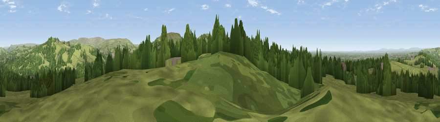

Viewpoint near Disley
#10280 in England · top 15% of its area beats it · near DisleyThe view, rendered

A 360° render of this exact spot computed from the terrain model, tree cover and land cover — summer colours, afternoon light, calibrated against photographs of famous viewpoints. Real trees, hedges and buildings will differ in detail.
The panorama
Grey silhouette: terrain skyline in each direction (720 bearings, Earth curvature and refraction included). Dashed green: skyline with trees (+15 m) and buildings (+8 m) as obstacles. Blue strip: how far the ground is visible on each bearing.
Where the view opens
Wedge length = distance to the farthest visible ground on that bearing (vegetation-aware). Rings at 10, 25 and 50 km.
What fills the view
52% grassland · 41% woodland · 6% built-up ·
Angular shares of the visible panorama (visual magnitude), not map area. Landscape diversity 0.40 (0–1 Shannon).
Key numbers
More beautiful places nearby
The staircase of upgrades: each row has a higher view potential than everything closer. Driving times are estimates from straight-line distance, calibrated against real road routing — check an actual route before setting out.
| Place | Direction | Drive | Score |
|---|---|---|---|
| Mellor Cross | NE · 3 km | ~6 min | 69.5 |
| Higher Moor | S · 4 km | ~9 min | 71.1 |
| Viewpoint near Compstall | NNW · 7 km | ~15 min | 72.5 |
| Cats Tor | SSE · 10 km | ~19 min | 72.8 |
| Harrop Edge | N · 11 km | ~21 min | 74.6 |
| Wild Bank | N · 13 km | ~24 min | 76.2 |
| Viewpoint near Carrbrook | N · 15 km | ~27 min | 77.1 |
| Viewpoint near Mow Cop | SSW · 30 km | ~46 min | 78.9 |
53.36389, -2.04993 · source: screening · position refined by local search. Computed location — check access rights before visiting.